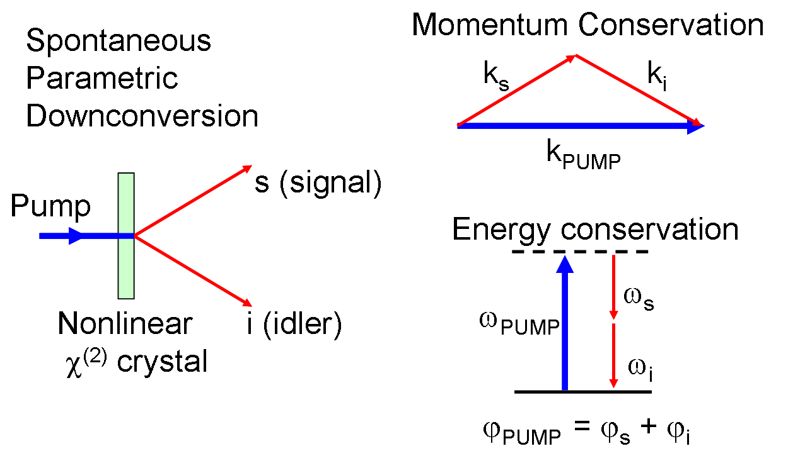
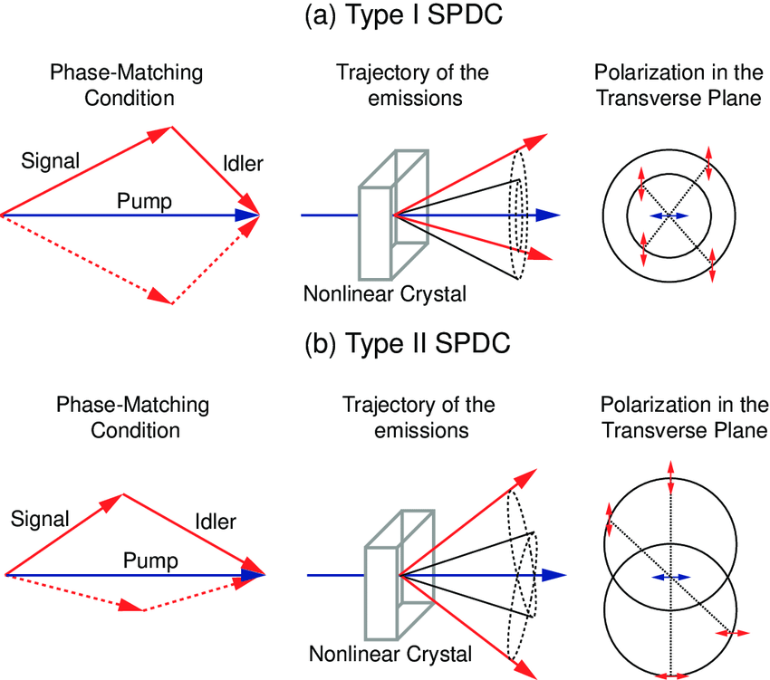
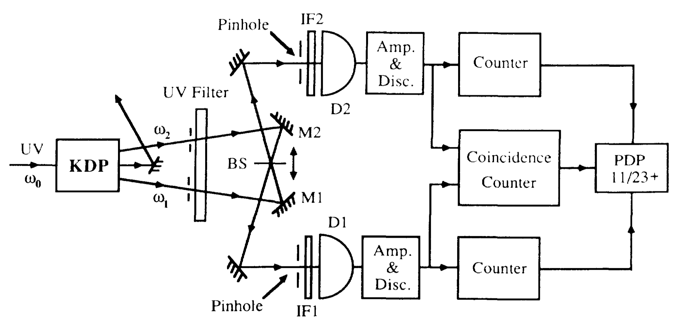
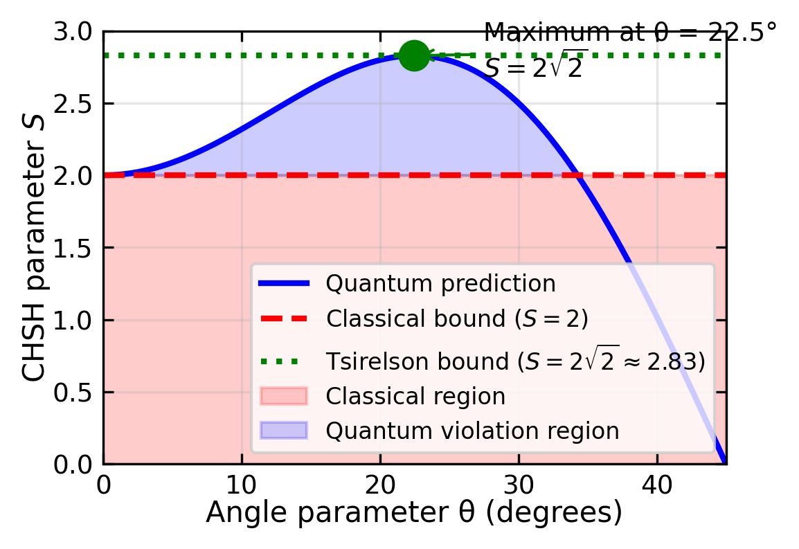
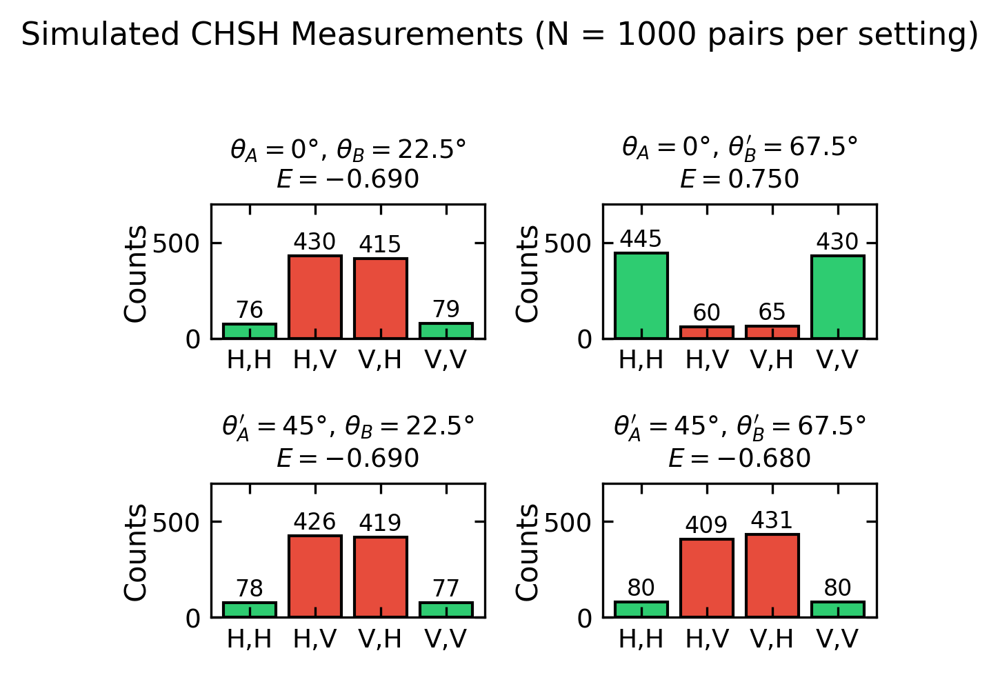

Parametric downconversion (PDC) is a nonlinear optical process where a high-energy photon (pump) splits into two lower-energy photons (signal and idler) while conserving energy and momentum. This process occurs in nonlinear crystals like Beta Barium Borate (BBO) and is one of the most common methods to generate entangled photon pairs.
Nonlinear Optics Primer
Nonlinear means that the polarization generated by the crystal is not proportional to the electric field.
Instead we have
\[
P = \epsilon_0 \chi^{(1)} E + \epsilon_0 \chi^{(2)} E^2 + \epsilon_0 \chi^{(3)} E^3 + \ldots
\]
where \(\chi^{(1)}\) is the linear susceptibility, \(\chi^{(2)}\) is the second-order susceptibility, and \(\chi^{(3)}\) is the third-order susceptibility. The second-order term is responsible for PDC.
When multiple frequencies are present in the crystal, the total electric field is a superposition of all fields. Consider the pump, signal, and idler fields as plane waves:
where \(E_p\), \(E_s\), and \(E_i\) are the (complex) amplitudes of the pump, signal, and idler fields respectively. The second-order polarization \(P^{(2)} = \epsilon_0 \chi^{(2)} E^2\) contains many terms from squaring this sum. The terms relevant for PDC are the cross terms that mix different frequencies.
For example, the product of the pump field with the complex conjugate of the signal field produces a polarization oscillating at the idler frequency:
Since \(\omega_p - \omega_s = \omega_i\) (energy conservation), this polarization acts as a source term in Maxwell’s equations, driving the growth of the idler field. Similarly, the term \(E_p E_i^*\) drives the signal field. This mutual amplification is the essence of parametric downconversion.
For efficient energy transfer from pump to signal and idler, the polarization wave must stay in phase with the generated field, requiring the phase matching condition: \(\vec{k}_p = \vec{k}_s + \vec{k}_i\).
The generated signal photon has a frequency \(\omega_s\) and wavevector \(\vec{k}_s\) given by:
\[
\omega_s = \omega_p - \omega_i
\]
which is equivalent to the conservation of energy:
where \(\vec{k}\) represents the wave vectors of the respective photons.

Figure 1— Schematic of spontaneous parametric downconversion (SPDC) process. A high-energy pump photon splits into two lower-energy photons (signal and idler) in a nonlinear crystal. The process conserves energy and momentum.
The conservation of momentum results in the signal and idler photons propagating along distinct trajectories. To achieve efficient PDC, the phase matching requirement \(\vec{k}_p = \vec{k}_s + \vec{k}_i\) must be satisfied, which necessitates alignment of both magnitude and directional components of the wave vectors. Since the pump, signal and idler photons have different frequencies, the refractive index of the crystal must be carefully engineered to ensure phase matching. This can be done with the help of birefringent crystals, periodic poling, or quasi-phase matching.
The relationship between the wavevectors can then be expressed in terms of refractive indices and frequencies as:
where \(n_p\), \(n_s\), and \(n_i\) are the refractive indices for pump, signal and idler photons respectively. Due to material dispersion, these refractive indices depend on frequency, making perfect phase matching challenging.
For collinear phase matching (where signal and idler propagate parallel to the pump), all wave vectors point in the same direction, so the vector equation reduces to a scalar condition on the magnitudes. For non-collinear phase matching (where signal and idler propagate at angles relative to the pump), we must consider the full vector nature of the relationship, with the transverse components also satisfying momentum conservation.
The phase mismatch \(\Delta k\) quantifies how well the phase matching condition is satisfied:
\[
\Delta k = k_p - k_s - k_i
\]
Perfect phase matching occurs when \(\Delta k = 0\). The efficiency of the PDC process decreases with increasing phase mismatch according to:
\[
\text{Efficiency} \propto \text{sinc}^2(\Delta k L/2)
\]
where L is the crystal length. The phase matching condition can be satisfied by adjusting the angle of the crystal or by using periodic poling.

Figure 2— Polarization configurations for Type-I and Type-II PDC. In Type-I PDC, the signal and idler photons have the same polarization, perpendicular to the pump polarization. In Type-II PDC, the signal and idler photons have orthogonal polarizations.
Both Type-I and Type-II PDC satisfy energy conservation (\(\hbar\omega_p = \hbar\omega_s + \hbar\omega_i\)) and momentum conservation (\(\vec{k}_p = \vec{k}_s + \vec{k}_i\)). The distinction between them lies in the polarization configuration.
In Type-I PDC, the signal and idler photons have the same polarization, perpendicular to the pump polarization. The process follows:
\[
e \rightarrow o + o
\]
where \(e\) represents extraordinary and \(o\) represents ordinary polarization.
In Type-II PDC, the signal and idler photons have orthogonal polarizations:
\[
e \rightarrow o + e
\]
In Type-II PDC, the signal and idler photons emerge from the crystal in two distinct cones due to the different refractive indices for ordinary and extraordinary polarizations. These emission cones intersect along two lines. At these intersection points, it becomes impossible to distinguish which cone produced which photon, leading to quantum entanglement.
For a given pump wavelength and crystal orientation, the conservation of energy and momentum determines the exact geometry of these cones. The intersection lines occur where both energy conservation (\(\hbar\omega_p = \hbar\omega_s + \hbar\omega_i\)) and momentum conservation (\(\vec{k}_p = \vec{k}_s + \vec{k}_i\)) are simultaneously satisfied for both possible emission paths.
At these special intersection points, the photon pairs can take either path with equal probability, resulting in a quantum superposition of the two possible polarization states. This quantum state can be written mathematically as:
where \(|H_s V_i\rangle\) represents the state with horizontal polarization of the signal photon and vertical polarization of the idler photon, and \(\phi\) is a phase factor that depends on the crystal parameters and geometry. The prefactor \(1/\sqrt{2}\) ensures proper normalization. Since \(|H_s V_i\rangle\) and \(|V_s H_i\rangle\) are orthonormal basis states, we have:
By collecting photon pairs from these intersection points, we obtain polarization-entangled photon pairs that are useful for quantum information applications.
When collecting photons from the intersection points, we can use a polarizing beam splitter (PBS) to separate the photons based on their polarization. The PBS transmits photons with one polarization and reflects photons with the orthogonal polarization. By placing a PBS at each intersection point, we can separate the photons into two distinct paths. This allows us to perform quantum operations on the photons independently, enabling quantum information processing tasks such as quantum teleportation, quantum cryptography, and quantum computing.

Figure 3— Experimental setup for measuring the coincidence counts of entangled photon pairs generated by PDC. The photons are collected from the intersection points and sent to two detectors. The coincidence counts are recorded when both detectors detect a photon simultaneously. Taken from [C. K. Hong, Z. Y. Ou, and L. Mandel, Phys. Rev. Lett. 59, 2044 – Published 2 November, 1987] (https://journals.aps.org/prl/pdf/10.1103/PhysRevLett.59.2044)
Code
viewof button =html`<button>Measure Polarization</button>`currentCount = {let count =0;returnfunction() {return++count; };}measurement = {// Only update when button is clickedif (button) {// Randomly decide if we measure H/V or V/H (50-50 chance)const random =Math.random();const result = random <0.5? ['H','V'] : ['V','H'];return {signal: result[0],idler: result[1],count:currentCount() }; }return {signal:'',idler:'',count:0};}// Display the measurement resultshtml`<div style="text-align: center; margin: 20px;"> <div style="display: flex; justify-content: space-around;"> <div style="border: 1px solid black; padding: 20px; margin: 10px;"> <h3>Detector 1 (Signal)</h3> <p style="font-size: 24px;">${measurement.signal}</p> </div> <div style="border: 1px solid black; padding: 20px; margin: 10px;"> <h3>Detector 2 (Idler)</h3> <p style="font-size: 24px;">${measurement.idler}</p> </div> </div> <p>Total measurements: ${measurement.count}</p></div>`
Quantum Entanglement
Having seen how parametric downconversion can generate pairs of photons with correlated polarizations, we now turn to understanding the deeper nature of quantum entanglement—the phenomenon that makes these photon pairs so remarkable and useful for quantum information applications.
Quantum entanglement is one of the most profound and counterintuitive features of quantum mechanics. Two particles are said to be entangled when their quantum state cannot be described independently — measuring one particle instantaneously determines the state of the other, regardless of the distance between them.
Separable vs. Entangled States
Consider two photons, A and B, each of which can be polarized either horizontally (H) or vertically (V). In a separable (non-entangled) state, each photon has its own definite polarization. For example, “photon A is horizontally polarized and photon B is vertically polarized” is a separable state. Measuring photon A tells us nothing new about photon B — we already knew B was vertically polarized.
An entangled state is fundamentally different. Consider a pair of photons prepared such that:
There is a 50% probability of finding both photons horizontally polarized (H, H)
There is a 50% probability of finding both photons vertically polarized (V, V)
There is 0% probability of finding them with opposite polarizations
This is a Bell state. Crucially, neither photon has a definite polarization on its own — the polarization is only defined for the pair. But if we measure photon A and find it horizontally polarized, we instantly know photon B is also horizontally polarized — even if the photons are light-years apart.
The EPR Paradox and Bell’s Theorem
In 1935, Einstein, Podolsky, and Rosen (EPR) argued that quantum mechanics must be incomplete. They reasoned that if measuring particle A instantly determines the state of distant particle B, then either:
Information travels faster than light (violating relativity), or
Particle B’s property was predetermined all along by some “hidden variable”
Einstein famously called entanglement “spooky action at a distance” and believed hidden variables must exist — that the photons must secretly “agree” on their polarizations when they are created, like a pair of gloves separated into two boxes.
In 1964, John Bell proved a remarkable theorem: if hidden variables exist, then correlations between measurements on entangled particles must satisfy certain inequalities (Bell inequalities). Quantum mechanics predicts these inequalities can be violated.
The key insight is to measure polarizations along different axes. If Alice measures her photon’s polarization along angle \(\theta_A\) and Bob measures along angle \(\theta_B\), they can compute the correlation \(E(\theta_A, \theta_B)\) between their results (+1 for same outcome, −1 for opposite). For four measurement angles, classical hidden variable theories predict:
This is the CHSH inequality. Quantum mechanics predicts a maximum value of \(2\sqrt{2} \approx 2.83\), violating the inequality.
Experiments have consistently confirmed the quantum prediction, ruling out local hidden variable theories and establishing entanglement as a genuine feature of nature. The 2022 Nobel Prize in Physics was awarded to Alain Aspect, John Clauser, and Anton Zeilinger for their pioneering Bell test experiments.
Mathematics of the CHSH Inequality
Setup and Notation
Consider two experimenters, Alice and Bob, who each receive one photon from an entangled pair. Alice can measure her photon’s polarization along one of two angles, \(\theta_A\) or \(\theta_A'\), and Bob can measure along \(\theta_B\) or \(\theta_B'\). Each measurement yields a result of \(+1\) (e.g., horizontal polarization) or \(-1\) (vertical polarization).
We denote:
\(A = A(\theta_A)\): Alice’s measurement result at angle \(\theta_A\)
\(A' = A(\theta_A')\): Alice’s measurement result at angle \(\theta_A'\)
\(B = B(\theta_B)\): Bob’s measurement result at angle \(\theta_B\)
\(B' = B(\theta_B')\): Bob’s measurement result at angle \(\theta_B'\)
The correlation between measurements is the expectation value of their product: \[
E(\theta_A, \theta_B) = \langle A \cdot B \rangle
\]
Derivation of the Classical Bound
In a local hidden variable theory, the outcomes are predetermined by some hidden variable \(\lambda\). Given \(\lambda\), each measurement has a definite value \(A(\lambda), A'(\lambda), B(\lambda), B'(\lambda) \in \{-1, +1\}\).
We can factor this as: \[
S(\lambda) = A(\lambda)[B(\lambda) - B'(\lambda)] + A'(\lambda)[B(\lambda) + B'(\lambda)]
\]
Since \(B, B' \in \{-1, +1\}\), we have two cases:
If \(B(\lambda) = B'(\lambda)\): then \(B - B' = 0\) and \(B + B' = \pm 2\), so \(|S(\lambda)| = 2|A'| = 2\)
If \(B(\lambda) = -B'(\lambda)\): then \(B - B' = \pm 2\) and \(B + B' = 0\), so \(|S(\lambda)| = 2|A| = 2\)
In either case, \(|S(\lambda)| = 2\) for every value of \(\lambda\).
Taking the expectation over all possible hidden variables: \[
|S| = |\langle S(\lambda) \rangle| \leq \langle |S(\lambda)| \rangle = 2
\]
This gives the CHSH inequality: \[
S = |E(\theta_A, \theta_B) - E(\theta_A, \theta_B') + E(\theta_A', \theta_B) + E(\theta_A', \theta_B')| \leq 2
\]
Quantum Mechanical Prediction
For the Bell state \(|\psi\rangle = \frac{1}{\sqrt{2}}(|HV\rangle + |VH\rangle)\), the correlation when Alice measures at angle \(\theta_A\) and Bob at angle \(\theta_B\) is: \[
E(\theta_A, \theta_B) = -\cos[2(\theta_A - \theta_B)]
\]
To maximize the violation, choose the optimal angles:
This violates the classical bound of 2, and is in fact the maximum possible quantum violation (the Tsirelson bound).
Physical Interpretation
The violation means that no theory where:
Measurement outcomes are predetermined (realism), and
Information cannot travel faster than light (locality)
can reproduce the predictions of quantum mechanics. Experiments consistently measure \(S \approx 2.7\)–\(2.8\), confirming the quantum prediction and ruling out local hidden variable theories.
The Hidden Variable as a Polarization Angle
In local hidden variable theories, the hidden variable \(\lambda\) plays the role of a pre-determined polarization angle for the entangled photon pair. This provides a concrete physical picture for what “hidden variable” means in the context of polarization experiments.
The classical picture: In Einstein’s preferred interpretation, when two photons are created in an entangled state, they would secretly “agree” on a common polarization direction \(\lambda\) at the moment of creation—like a pair of gloves separated into two boxes that were always left and right from the start. For example:
The photons are created with a definite (but unknown to us) polarization direction, say \(\lambda = 30°\)
When Alice measures at angle \(\theta_A\), she gets \(+1\) if the photon’s hidden polarization \(\lambda\) is closer to \(\theta_A\) than to \(\theta_A + 90°\), and \(-1\) otherwise
Bob’s measurement follows the same logic for his photon
This is directly analogous to Malus’s law for polarized light, where the transmission probability depends on the angle between the incoming polarization and the polarizer axis.
Why this treatment is valid: The hidden variable \(\lambda\) can be treated as a continuous angle parameter because:
Classical realism: In a hidden variable theory, each photon pair has some definite pre-existing state characterized by \(\lambda\)
Statistical ensemble: Different photon pairs may have different values of \(\lambda\), distributed according to some probability distribution \(\rho(\lambda)\)
Natural interpretation: The most natural hidden variable for polarization experiments is an angle—the “true” polarization direction the photons carry with them
The correlation then becomes an average over all possible hidden angles: \[
E(\theta_A, \theta_B) = \int A(\theta_A, \lambda) \cdot B(\theta_B, \lambda) \cdot \rho(\lambda) \, d\lambda
\] where \(A\) and \(B\) are the measurement outcomes (\(\pm 1\)) as functions of both the detector angle and the hidden angle \(\lambda\).
The crucial point: The CHSH derivation shows that regardless of what \(\lambda\) is or how it’s distributed, the classical bound \(|S| \leq 2\) always holds. This is because the algebraic identity \(|S(\lambda)| = 2\) works for any single value of \(\lambda\)—averaging over any distribution of hidden angles cannot exceed this bound.
The quantum violation (\(S = 2\sqrt{2}\)) therefore proves that the photons cannot be carrying a pre-determined polarization angle. Their polarization is genuinely undefined until measured, and the correlations arise from the entangled quantum state itself, not from any shared “hidden angle.”
Figure 4— Quantum correlation function for entangled photon pairs. The correlation \(E(\theta_A, \theta_B) = -\cos[2(\theta_A - \theta_B)]\) depends only on the angle difference. Perfect correlation (+1) occurs when detectors are perpendicular (90°), perfect anti-correlation (−1) when aligned (0°).
Figure 5— Optimal measurement angles for the CHSH Bell test. Alice chooses between \(\theta_A = 0°\) and \(\theta_A' = 45°\), while Bob chooses between \(\theta_B = 22.5°\) and \(\theta_B' = 67.5°\). These angles are evenly spaced by 22.5° and maximize the quantum violation of the CHSH inequality.
Code
fig, ax = plt.subplots(figsize=get_size(10, 7))# Parameter phi determines all angles: Alice at 0, phi; Bob at phi/2, 3phi/2phi = np.linspace(0, 90, 500)phi_rad = np.radians(phi)# Calculate S for symmetric angle choice# E(0, phi/2), E(0, 3phi/2), E(phi, phi/2), E(phi, 3phi/2)def E_quantum(theta_diff):return-np.cos(2* theta_diff)# For the standard symmetric configurationS_quantum = np.abs( E_quantum(phi_rad/2) -# E(0, phi/2) E_quantum(3*phi_rad/2) +# E(0, 3phi/2) E_quantum(phi_rad/2) +# E(phi, phi/2) E_quantum(phi_rad/2) # E(phi, 3phi/2))# Actually, let's use the standard CHSH with variable spacing delta# Alice: 0, 2*delta; Bob: delta, 3*deltadelta = np.linspace(0, 45, 500)delta_rad = np.radians(delta)S_quantum = np.abs(-np.cos(2*delta_rad) -# E(0, delta) (-np.cos(2*3*delta_rad)) +# -E(0, 3*delta) (-np.cos(2*delta_rad)) +# E(2*delta, delta) (-np.cos(2*delta_rad)) # E(2*delta, 3*delta))# Simpler: use standard parameterization# With angles 0, 2θ for Alice and θ, 3θ for Bobtheta = np.linspace(0, 45, 500)theta_rad = np.radians(theta)E1 =-np.cos(2* theta_rad) # E(0, θ)E2 =-np.cos(2*3*theta_rad) # E(0, 3θ) E3 =-np.cos(2* theta_rad) # E(2θ, θ)E4 =-np.cos(2* theta_rad) # E(2θ, 3θ)S = np.abs(E1 - E2 + E3 + E4)ax.plot(theta, S, 'b-', linewidth=2, label='Quantum prediction')ax.axhline(y=2, color='r', linestyle='--', linewidth=2, label='Classical bound ($S = 2$)')ax.axhline(y=2*np.sqrt(2), color='g', linestyle=':', linewidth=2, label=f'Tsirelson bound ($S = 2\\sqrt{{2}}\\approx {2*np.sqrt(2):.2f}$)')# Mark the maximummax_idx = np.argmax(S)ax.plot(theta[max_idx], S[max_idx], 'go', markersize=10)ax.annotate(f'Maximum at θ = {theta[max_idx]:.1f}°\n$S = 2\\sqrt{{2}}$', xy=(theta[max_idx], S[max_idx]), xytext=(theta[max_idx]+5, S[max_idx]-0.15), fontsize=9, ha='left', arrowprops=dict(arrowstyle='->', color='green', lw=1))# Shade the classical regionax.fill_between(theta, 0, 2, alpha=0.2, color='red', label='Classical region')# Shade the quantum-only regionax.fill_between(theta, 2, S, where=(S >2), alpha=0.2, color='blue', label='Quantum violation region')ax.set_xlabel('Angle parameter θ (degrees)')ax.set_ylabel('CHSH parameter $S$')ax.set_xlim(0, 45)ax.set_ylim(0, 3)ax.legend(loc='lower right', fontsize=8)ax.grid(True, alpha=0.3)plt.tight_layout()plt.show()

Figure 6— CHSH parameter \(S\) as a function of angle \(\phi\), where Alice measures at \(0°\) and \(\phi\), and Bob at \(\phi/2\) and \(3\phi/2\). The classical bound is \(S \leq 2\) (dashed line). The quantum prediction reaches a maximum of \(2\sqrt{2} \approx 2.83\) at \(\phi = 45°\), clearly violating the classical bound.
Code
np.random.seed(42)n_pairs =1000fig, axes = plt.subplots(2, 2, figsize=get_size(10, 8))axes = axes.flatten()# Measurement angle combinationsangle_pairs = [ (0, 22.5, "$\\theta_A = 0°$, $\\theta_B = 22.5°$"), (0, 67.5, "$\\theta_A = 0°$, $\\theta_B' = 67.5°$"), (45, 22.5, "$\\theta_A' = 45°$, $\\theta_B = 22.5°$"), (45, 67.5, "$\\theta_A' = 45°$, $\\theta_B' = 67.5°$")]def simulate_measurements(theta_A, theta_B, n):"""Simulate measurements on entangled |HV> + |VH> state"""# Probability of same outcome delta = np.radians(theta_A - theta_B)# For |HV> + |VH> state:# P(same) = sin²(θ_A - θ_B), P(different) = cos²(θ_A - θ_B) p_same = np.sin(delta)**2 outcomes_A = [] outcomes_B = []for _ inrange(n):# First decide Alice's outcome randomly alice = np.random.choice([1, -1]) # 1 = H, -1 = V# Bob's outcome correlated with Alice'sif np.random.random() < p_same: bob = alice # Same as Aliceelse: bob =-alice # Opposite to Alice outcomes_A.append(alice) outcomes_B.append(bob)return np.array(outcomes_A), np.array(outcomes_B)for idx, (theta_A, theta_B, title) inenumerate(angle_pairs): ax = axes[idx] A, B = simulate_measurements(theta_A, theta_B, n_pairs)# Count outcomes HH = np.sum((A ==1) & (B ==1)) HV = np.sum((A ==1) & (B ==-1)) VH = np.sum((A ==-1) & (B ==1)) VV = np.sum((A ==-1) & (B ==-1)) outcomes = [HH, HV, VH, VV] labels = ['H,H', 'H,V', 'V,H', 'V,V'] colors = ['#2ecc71', '#e74c3c', '#e74c3c', '#2ecc71'] # Green for correlated, red for anti bars = ax.bar(labels, outcomes, color=colors, edgecolor='black', linewidth=1)# Calculate and display correlation E = (HH + VV - HV - VH) / n_pairs ax.set_title(f'{title}\n$E = {E:.3f}$', fontsize=9) ax.set_ylabel('Counts') ax.set_ylim(0, n_pairs *0.7)# Add count labels on barsfor bar, count inzip(bars, outcomes): ax.text(bar.get_x() + bar.get_width()/2, bar.get_height() +10, str(count), ha='center', va='bottom', fontsize=8)fig.suptitle(f'Simulated CHSH Measurements (N = {n_pairs} pairs per setting)', fontsize=11, y=1.02)plt.tight_layout()plt.show()

Figure 7— Simulated measurement outcomes for a CHSH Bell test with 1000 entangled photon pairs. Each panel shows the joint detection events for one of the four measurement settings. The correlations clearly show the quantum signature — same-outcome events (HH, VV) dominate when \(|\theta_A - \theta_B| < 45°\), while opposite outcomes become more likely as the angle difference increases.
Why Entanglement Matters
Entanglement is not just a philosophical curiosity — it is a practical resource for:
Quantum cryptography: The E91 protocol uses entangled photons to generate secure encryption keys. Any eavesdropping attempt disturbs the entanglement and is immediately detected.
Quantum teleportation: The quantum state of one particle can be transferred to another distant particle using entanglement and classical communication.
Quantum computing: Entanglement enables quantum computers to perform certain calculations exponentially faster than classical computers.
Tests of fundamental physics: Bell test experiments probe the foundations of quantum mechanics and the nature of reality.